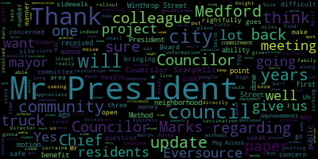
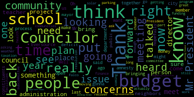

[Caraviello]: Good evening, everyone. The ninth regular meeting of the Medford City Council. Mr. Clerk, please call the roll.
[Hurtubise]: Councilor Bears? Present. Councilor Falco? Present. Vice President Knight? Councilor Marks? Present. Councilor Morell? Present. Councilor Scarpelli? President Caraviello?
[Caraviello]: Yes, this is the president.
[Falco]: I pledge allegiance to the flag of the United States of America and to the republic for which it stands, one nation, under God, indivisible, with liberty and justice for all.
[Caraviello]: Chapter 38, section 18 of the governor's March 15th order, imposing strict limitation on the number of people that may gather in one place, this meeting of the Medford City Council will be conducted via remote participation to the greatest extent possible. Specific information and general guidelines for remote participation by members of the public and or parties with a right or requirement to attend this meeting can be found on the city of Medford website at www.medford.org. For this meeting, members of the public who wish to listen or watch the meeting may do so by accessing the meeting link contained here. No in-person attendance of members of the public will be permitted, but every effort will be made to ensure that the public can adequately access the proceedings in real time via technological means. In the event we were able to do so despite best efforts, we will post on the city of Medford community media website and audio or video recording transcript or other comprehensive record of the proceedings as soon as possible. Councilor Knight, would you please take the chair?
[Knight]: That's why I asked. Council paper 21078 offered by President Caraviello. Be it resolved that the Medford City Council requests that we reach out to one of the owners of the 630 Felsway Plaza, Kimco Corporation to meet with the city council on the placement of collection bins on their property. Councilor Caraviello.
[Caraviello]: Thank you, Mr. President. Today I received a call couple of residents that the bins are overflowing again. And this is the second time that I've reached out to the company to have that emptied. So they were emptied, I think, later this evening. When I reached out to the company that owns that, Standard Recycling, those were supposed to have been removed last week because they weren't in compliance with our current ordinance. When I talked to the gentleman again today, he said he promised they'll be up by the end of the week. But, Mr. President, this is already twice that I've had to reach out to them. They're not showing the good faith that, I mean, even in the beginning, I mean, these are getting filled. So I think it's time that we reach out to Kimco, we sign an agreement with this company for the placements of those containers on their property, and have them appear before the council, and so the neighbors can make this pleasure known. about those being there because they're a site hazard and they're just a hazard in general. So I would ask that if the administration contact Kimco and request that they come to the council within the next 14 days.
[Knight]: Second. On the motion of Councilor Caraviello, seconded by Councilor Falco.
[Castagnetti]: Will the clerk please call the roll.
[Hurtubise]: Councilor Bears. Yes. Falco. Yes. Councilor Marks. Yes. Councilor Morell. Yes. Kelly. Yes. President Caraviello.
[Knight]: Vice President Knight. Yes. Seven in the affirmative, zero in the negative, the motion passes. Mr. President. I'll wait for the president to get up there before we switch seats.
[Marks]: Councilor Marks. Thank you, Mr. President. Three weeks ago, this council voted unanimously to request that the Board of Health Director give us and the residents of this community a weekly update on the vaccine rollout, as well as any potential method sites for vaccination sites. And we received, all of us received an email from the mayor stating that the Board of Health Director will appear before the Medford City Council on March 9th and that she will give the council as well as residents an update on the rollout at that point, Mr. President. So I just wanna update people that are concerned in the community on how to get assistance and when and if there'll be a vaccination site locally that they can attend. Thank you.
[Caraviello]: Thank you, Councilor Lonnox. 21079 offered by Vice President Knight, whereas quarter two revenue forecast projects a 5.5 to an $8 million structural deficit, whereas The current fiscal year budget relies on $5 million in reserves, be it so resolved that the Mayor present to the City Council a zero-based budget for the upcoming fiscal year. Vice President Knight.
[Knight]: Mr. President, thank you very much. This is a resolution that I raised last year prior to the pandemic, and then the pandemic struck, and we were faced with a lot of fiscal uncertainty. It's apparent that that fiscal uncertainty still lingers over our head now, and I don't think that those circumstances are going to change. But Mr. President, what I'm asking the mayor to do is to put forward a zero-based budget. Instead of continuing the trend of using last year as a reference point, to have each department start with zero and build a budget from the ground up, a budget that will be based upon measurables and goals, and will have every expense justified based upon its funding mechanism, its impact, and its prioritization to the community, Mr. President. I think we're at a point now where we're still working off McGlynn One budget that's been traditionally budgeted as a reference point year in and year out now for the better part of three decades. And it's time, Mr. President, that we take a look at our priorities, our spending in the way that we budget. and change the way we do it, Mr. President. I think that this is something that needs to be looked at and the traditional way of budgeting where we use last year as a reference point and build upon that without measuring whether or not we've attained the goals that we've set our sights upon, whether or not we're seeing that the money that we've invested is giving us the most bang for the buck and whether or not we're meeting the measurables that are defined the previous year, I think is very important, Mr. President. And in zero-based budgeting, every year you have to show that your expenses were justified, that you've made an impact, and that your prioritizations remained in line. So with that being said, I ask my council colleagues to support this measure. We're gonna be facing very uncertain fiscal times, and I, as one member of this board, do not feel comfortable relying on more than 80% of our reserves, using more than 80% of our reserves to balance next year's fiscal budget. So with that being said, Mr. President, I ask my council colleagues for support. Thank you, Mr. Vice President. Councilor Falco.
[Falco]: Thank you, Mr. President. And I want to thank Councilor Knight for bringing this forward. It's a resolution that I definitely support. And I think, you know, it's not too early to think about budget. We need to be talking about budget and the sooner the better. You know, we received our Q2 budget update, let's see, a few weeks ago and Councilor Knight's right. The basically a forecasting, I think a five to $8 million structural deficit. Now more than ever, we need to be working with the administration. The administration should be working with us to let us know where the city stands with regard to the budget. The quarterly updates are good. I mean, we get to take a look at the data or some of the data and we get to know kind of where we're going. It's a little bit of a roadmap. but we really need transparency from the administration now with regard to the budget. And we need to have up-to-date information as soon as possible. No, the budget is not only a fiduciary responsibility. It's good government. We need to make sure that we're on top of this. We're coming into a really, really tough budget year. We all know it. And we need to have pre-budget meetings. It's something that everyone on this council supports. The administration was going to work with us last year on this. We need to make sure we're working on this. I know COVID happened. We need to make sure we're working on this now. If you take a look, And I believe the request was, let's just meet with the major departments. Let's meet with the DPW, the police department, the fire department, just to see what is the budget going to look like. If you take a look at last year's budget, which I believe was about $185 million, 36 million was a DPW, 14 million, the police department, 14 million, the fire department. That takes you to about $64 million, I believe about 35% of the budget. We're only asking to meet with four departments. I don't think that's too much to ask for. And if you throw in the school department, which I think is really important to meet with a finance person from on the school side, then you're probably talking about 68% of the budget, but we're only asking for four departments. You know, the pre-budget meetings are really important. To me, I think they need to happen. So President Kavya, I'd like to ask you, have you received any update from the administration as to pre-budget hearings or pre-budget meetings with the department heads? Is there any type of timeline on that?
[Caraviello]: Councilor Falco, I have reached out to, I met in person with the chief of staff and I requested the meetings of the major departments in the school department. And I've gotten no response as of yet. I will reach out again. I said that we'd like to do that if we can get it done in March. But again, the administration has not given me any response to that. But I will ask again. And but I said, you know, we don't need to do the whole thing. And the response was, you know, they hadn't even started their budget meeting with them.
[Falco]: at this point, sir. And I thank you for reaching out on behalf of the council. I appreciate the attempt. I find it hard to believe that they haven't, and I'm not saying I don't believe you, but I have a hard time thinking that the administration hasn't talked budget yet and here we are in March. I mean, the budget hearings, when you think about it, they're probably going to be sometime maybe early June. So I would think they need to be talking about budget now, and we need to be part of that conversation. If you take a look at the school side, Councilor Scarpelli, Councilor Locke, you on the school committee, you remember this, we had pre-budget hearings. We met with the department heads in February, March, April. By the time you got to the budget, there were no surprises. We need to make sure that's happening on the city side as well. So thank you for bringing this forward. I support this resolution. I second the resolution and I would hope that the administration will work with us.
[Caraviello]: I will reach out again tomorrow. I did do that a couple of weeks ago and I've had no response.
[Falco]: Thank you. I appreciate you for doing that. And like I said, this is really important and we need to make sure we're on top of it. Thank you.
[Bears]: Thank you, Mr. President, and thank you to my colleague, Vice President Knight, for putting this resolution forward. I think it would be interesting and helpful to look at a zero-based budget, but I do have some concerns about so drastically moving from the existing process to the zero-based process. I would like to see maybe both. I know that's a lot of work, but I think it would be helpful to see but what the administration is proposing based on the prior year, and then what a zero-based budget look like, and then we can make an informed decision. So that is just my preference. If we're talking about just looking at a zero-based budget, I will probably vote against this resolution, but again, I appreciate it being brought forward by Vice President Knight.
[Caraviello]: Thank you, Councilor Bears. Councilor Scarpelli.
[Hurtubise]: Thank you, Councilor Knight for bringing this forward.
[Scarpelli]: What we're hearing tonight is that we need to see some movement. We need to see some action as we go on. We heard it from the chief of staff a few weeks ago, looking at a five to $8 million budget deficit. We heard it from the mayor, if you watched her interview on public access with the transcript that we're looking at dire times with five to $8 million deficit. And something I would like to recommend to the council, it might, behoove us that we, as a council, look and put in place what neighboring communities do. I know neighboring communities, their auditing, finance, budget, and taxation, or their budget and finance subcommittees meet on a biweekly basis to go over with the city finance director, department heads that are called on when needed, What those organizations do in neighboring communities is they eliminate the process that we're doing right now and continually asking for the administration to put a budget together. So what I would recommend, and I'd like to see this put forth and I'll leave it up to the president, make this as a motion, is really looking at the subcommittee of auditing, finance, budgeting, and taxation to try to meet in bi-weekly meetings and look at budget concerns with the finance director, the city administration, and then bringing in those departments that we just requested. Unfortunately, we heard it for years here, whether it be school committee and getting the budget Friday before Father's Day, and we have to vote on it on Monday, or on this council so far is receiving that budget pretty late. I know that unfortunately Mayor Lungo-Koehn and her administration had a tough year last year with the pandemic and I sat next to her for years and we all had the same concerns that we get the budget issue, we get the budgets too late and it's difficult to really put together a plan or understand the plan. So I agree with Councilor Falco. I believe the mayor said in the meeting that it was the school department had 52% of the budget last year. I might be wrong, but if between the school, like Councilor Falco said, the school department, DPW, police and fire, we're looking at the majority of our budget here in the community. And like everybody said, this is gonna be a scary time coming up you know, we're going to have to try to figure this out. And I'd rather have more information ahead of time, instead of waiting for the last minute and then being told we have to do something. So, because I tell you what, if I have that decision to make at this year's budget, I don't know if I'd support it. So thank you, Mr. President. And thank you, Mr. Vice President. Oh yeah, if we can, if we can request the chairperson of the auditing finance budget and taxation subcommittee, to possibly look into setting up some meetings. I hate to put the work on that chairperson, but is it you now? Oh, I don't think so.
[Caraviello]: I don't have the list in front of me, sorry. It's Councilor Marks.
[Scarpelli]: Oh, good, so you're really good with this. So you're a pro at this, so. Okay.
[Marks]: If I can, I- Just point of information, Mr. President. Point of information, Councilor Marks. I appreciate Councilor Scarpelli's intent, You yourself, Mr. President, just stated to us that you tried on several attempts to have a meeting with the administration to discuss the budget, and they refused to get back to you. I'm not quite sure what I'm gonna be able to do on a subcommittee trying to pose the same question. So I appreciate the intent, but I'm not sure how effective that'll be.
[Caraviello]: Like I said, I will reach out tomorrow again to see if their stance has changed on letting us have the... Why don't I just retract that until next week to see if it gets the message back. I will do that tomorrow. Thank you. All right. Okay, any further discussion? Okay, on the motion by Vice President Knight, seconded by Councilor Falco. Mr. Clerk, please call the roll.
[Hurtubise]: Councilor Bears. No. Councilor Falco.
[Marks]: Yes.
[Hurtubise]: Vice President Knight. Councilor Marks. Yes. Councilor Morell. Yes. Councilor Scripp-Hilley. Yes.
[Caraviello]: President Ker-Viello. Yes. Motion passes, six in the affirmative, one in the negative. 21800 offered by Vice President Knight. being so resolved that the Medford City Council requests the administration provide a presentation of C-Click Fixed Data each quarter following the rollout of the new program. Vice President Knight.
[Knight]: Mr. President, thank you very much. We had a great presentation last week from the administration relative to their vision for a C-Click Fixed Program here in the community, something I'm very excited about. I think it's about time that we started using data to drive our decision-making when it comes to delivering services here in this community. And when you look at what this council's done over the past term, in terms of getting data and getting information, it's necessary for us to make good decisions. You know, we've moved to require that the administration provides us with monthly warrant articles, so we know where money's being spent. We're requiring the administration to present before us quarterly updates on the financials, so we know what fiscal condition we're in. And quarterly updates on C-Click fixed data, I think, Mr. President, goes hand in hand with those two items. what exactly it is, the types and levels of service that the people out there in the community are seeking right now. It also highlights what we're good at and what we're bad at, Mr. President. Now, if we were a multi-million dollar for profit corporation, I'd say that our goal is to make profits, but we're not. Our goal as a government entity is to deliver services. And I think it's safe to say the city of Medford is not great at delivering services. We lag behind our neighboring communities when it comes to that. I think that putting our money where our mouth is is important. In order for us to do that, we need the appropriate data and information before us to make well-informed decisions. And I think that quarterly updates, quarterly data reports from C-Click Fix will allow us the opportunity to have more information in front of us when it comes down to making those difficult financial decisions. So with that being said, I ask my council colleagues to support this measure. It falls in line with the practice of open and transparent checkbook that we've supported all term long. and I'd ask my council colleagues to support.
[Scarpelli]: Councilor Scarpelli. Thank you, Mr. President. And thank you for Councilor Knight for bringing this forward. If we can, if we can amend this paper to ask the administration if they've met with the leadership team to see quick fix of implementing the forgiveness program, or maybe if one of my colleagues can help me, what was the program that we talked about? I didn't bring my notes with me. to work with constituents that have a very big parking, right? It was supposed to meet amnesty, correct, right? It was the amnesty. That's what, thank you, Council Member Mock. So if we could just ask if they've spoken with CQX about the amnesty, implementing the amnesty program to possibly, recover some of that $500,000 that is still outstanding. Thank you. Thank you. Councilor Belco.
[Falco]: Thank you, President Caraviello. And thank you Councilor Knight for bringing this forward. It's something I truly support. I think, especially when it comes to budget, it's good to see data and good to see what's coming in with regard to tickets and how they're being, you know, how they're being resolved. The only thing I would ask if I may, through the chair to Councilor Knight, is it okay if we stagger these so we would get a report at the end of May for like early June, just so we have like data for us going into the budget, would you be amenable to that?
[Knight]: I as one member of this body could care less as long as we get it. I think the person that we really need to ask that question to sits across the hall as to when they're willing, able and ready to provide us with this information, some of which we fight tooth and nail to receive.
[Falco]: And I understand because it'd be nice to get something. I just would like to see, if we're looking at budget meetings in June, that means that we probably, the latest report we probably have is something that had much data. And that gives us two months of data that we're not looking at. So that's why I'd like to get, I think from a budget perspective, we're looking at the budget. It'd be nice to see something that as of like May month end in June, so we can kind of, make more sense of the numbers in the budget. So that would be a suggestion that I would like to see or an amendment or a B paper, whatever you prefer, to have, you know, May data going into the budget.
[Knight]: Mr. President, I've moved to amend the paper to insert the following language, on a schedule sufficient to councilor Falco's liking. I like it. Councilor Scarpelli.
[Caraviello]: Yes. Councilor Scarpelli, Your amendment for the amnesty was not part of our C-Click Fix program.
[Scarpelli]: Oh, please forgive me. I had a brain freeze. That was part of the- That was part of the Republican- I'll bring it up later. Thank you, I apologize. That is withdrawn, I apologize.
[Caraviello]: On a motion by Vice President Knight, seconded by Councilor Falco. Mr. Clerk, please call the roll. As amended by Councilor Falco, to his liking.
[Hurtubise]: We're actually using council members, correct?
[Caraviello]: Yes.
[Falco]: So if we get, so if we could have like data, you know, so if March could be like a second quarter cutoff.
[Knight]: We can get a monthly too. I think it's a click of a button from the way they made it sound. It was going to be very easy reporting techniques. So we get the Warren articles monthly. I don't see why we couldn't get this report monthly as well.
[Caraviello]: Who's the second? Councilor Falco is the second. As amended by Councilor Falco. Mr. Clerk, please call the roll.
[Hurtubise]: Councilor Paris. Yes. Councilor Falco.
[Marks]: Yes.
[Hurtubise]: Vice President Nights. Councilor Marks.
[Marks]: Yes.
[Hurtubise]: Councilor Morell. Yes. Councilor Scarpelli.
[Caraviello]: Yes. President Caraviello. Yes, I'm in the affirmative motion passes. 21081. Offered by Vice President Knight and President Caraviello, we have resolved that the Medford City Council extend its deep and sincere condolences to the family of Herbie Wells on his recent passing. Vice President Knight. Thank you, Vice President. Many of us remember Mr. Wells, a longtime football coach. For me personally, the Wells family, they were an extension of the Caraviello family. Very close with my family. And so I knew him a little different than anyone else here, but good family. Again, always took care of the kids on the football team, good community man. To the younger members who don't remember, in the early 70s and late 60s, when the Bruins were the Big Bad Bruins, Mr. Wells worked the door at the Boston Garden. And he was very generous to us. We would go to the Boston Garden, give us the nod and then he'd let us go to the gate and watch the game. So again, he was, all the kids, everybody that went there. And I better say, Herbie was a real good guy and I wish the best to his wife, Patty, on his passing.
[Knight]: Vice President Knight. Mr. President, thank you very much. I, too, go way back with the Wells family, Peter and Mary. Peter is Herbie's brother and I We've been close friends for a long time. His niece and nephew, Brian and Julie, and I are very close as well growing up. And I had the pleasure and luck of having Mr. Wells as my sixth grade teacher at Brooks Arms Elementary School, Mr. President. And I'll just tell you what a gentleman he was, a great teacher, great person. He was someone that was willing to pull you aside and teach you the values of life. Someone that wasn't just a classroom teacher, but went a little bit above and beyond. Someone that, you know, was really a mentor and someone that could help out someone that was on the wrong path. So with that being said, Mr. President, he'll certainly be missed. You know, one thing I think that everybody who ever worked with Mr. Wells would say is that he was a hard worker. I think when he retired, he might have had, what, one or two days absent in his whole career as a teacher in the public schools. Never missed a day of school. Never missed a day of school. He came in every day and he did it because it was for the kids. And he was just a great person. He died very unexpectedly in his golden years down in Florida, Mr. President, while he was enjoying his retirement. as a snowbird. So that being said, I support the resolution and your commentary as well.
[Scarpelli]: Councilor Scarpelli, thank you for my colleagues for bringing this forward. Again, another legend. off to heaven. So I think that Mr. Wells, I remember substitute teaching and Mr. Wells often being the person that puts his arm around you as a young teacher and saying, okay, this is what to watch for. This is what to do and what not to do. And I was fortunate also to know him. His son, Scott and I were classmates in 87. Scott left us way too early. And I know that was a painful ordeal for the Wells family. Um, it's, we, we're definitely going to miss Mr. Walls in our community and we get send our deepest sympathies to the family. So thank you, Mr. President. Thank you.
[Marks]: Councilor Marks. Thank you, Mr. President. I want to thank my colleagues for putting this on. Uh, Mr. Walls really cared about the students he taught. Uh, he was strict, but, uh, he cared and that showed Mr. President and the way he carried himself. and his community involvement. He was involved in a lot of different activities, as you heard from my council colleagues, and he was never looking for a thank you or anything other than he just wanted to give back, and indeed he did so. He was a true family man, and he will be sorely missed, Mr. President.
[Caraviello]: Thank you. On the motion by Vice President and President Cabrera, seconded by Councilor Marks. Mr. Clerk, please call the roll.
[Hurtubise]: also bears. Yes. Also Falco. Yes. Vice President night. Also marks. Also morale. Yes. Also Scarpelli. Yes. Yes, sir.
[Caraviello]: Motion passes please stand for a moment 21082 offered by Councilor Scarpelli, be it resolved that the City Environment Energy Director look into solar carports at city facilities to help with energy costs and possible revenue gaining venture. Councilor Scarpelli.
[Scarpelli]: Thank you, Mr. President. I bring this forward because as we just, a few resolutions ago, we talked about how difficult times and how oblique times are looking financially and trying to recover funding anywhere we can in our community. I was lucky enough to traverse a few communities that have solar powered carports in their athletic facilities and their open parking lots. Talking to facility managers and a few communities, the discussion has been the lack that really haven't lost any parking spots, but at the same time, gaining enough electricity and power to run their hockey rinks, some of their high schools, and then having a plan in place that would also bring back some funding back to their communities. So I know that our energy environment director has been busy. I think this might be the first first resolution that we've sent over for a long time. We haven't heard much from that department, but I think it's something that we really need to inquire about. I mean, I know that there are private deals going around with different solar companies for residents. And I'm sure with the competition that's out there right now, looking at different solar carport farms at some of our facilities, to recover some funding, I think is a prudent effort. So I welcome the director to put a plan together and hopefully we can get some news back. Thank you. Councilor Morocco.
[Morell]: Thank you, Mr. President. I want to thank Councilor Scarpelli for bringing this forward. I think this is a great idea to look into. To his point, this makes a lot of financial sense. It also makes a lot of sense as far as making efficient use of space and really kind of leveraging that sort of dead space that a lot of parking lots have, especially when they're not in use. And I think it's also a great idea because it's a physical representation to a commitment to sustainability that this city continues to make. And that's something that's very important in this space. So I look forward to supporting this and hope something can come out of it.
[Caraviello]: Thank you. On the motion by Councilor Scott Peltier, excuse me, Vice President Knight.
[Knight]: Mr. President, thank you very much. I'm just thinking about this, and as Councilor Scarpelli is making his presentation, I'm picturing in my head, you know, where this would work. And, you know, having worked at La Conte Skating Rink for a while, and, you know, having been able to whip the Zamboni around the ice down there a little bit back in my heyday, one of the things that always amazed me was how much it costs to operate these facilities. You know, the electrical bill at La Conte Rink is like $30,000 a month. Imagine if we were able to put these solar carports in, between La Conte and Homel and generate enough electricity to pay the electric bill at La Conte and for the lights at Homel. It's a win-win. It's a win-win, Mr. President. So, you know, I thank Councilor Scarpelli for bringing this on, for putting this on, and I'm put in support of it wholeheartedly this evening.
[Caraviello]: Thank you. On the motion by Councilor Scarpelli, seconded by Councilor Morell. Mr. Clerk, please call the roll.
[Hurtubise]: Councilor Bears. Yes. Councilor Falco. Yes. Vice Mayor. Yes. Councilor Morell?
[Caraviello]: Yes. Councilor Kelly? Yes. Senator Falco? Yes, seven in the affirmative, motion passes. 21-083 offered by Council of Mayors. Be it resolved that the Medford City Council, that the city administration plan an update on the status of 8086 Nail Street, which had a severe fire last year and was left open to the elements for several months, and how the administration plans to address health and safety code enforcement to ensure safety for any new construction in our neighboring residential building. Be it further resolved that this item reappear on the city council agenda in two weeks for an update in discussion or further action that can be taken by the council to address this issue. Councilor Bears, before I think I had the opportunity to speak with building commissioner Moki today, and this is private property and is not germane to the city council. According to him, the building is closed to their satisfaction, and the person who owns the property has not filed for any building permits or any new construction. So unfortunately at this time, after my conversation with the building commissioner, I am going to rule this out of order, Councilor Bearss. Because it's a private property, and we have no jurisdiction on that. And there is no building permit that has been filed.
[SPEAKER_04]: OK.
[Caraviello]: Thank you. If you want, if you'd like to call the building commissioner in the morning, he'll give you a same synopsis he just gave me.
[Bears]: Yeah, I've spoken with the building commissioner and this is mostly their residents in the area who are concerned about the status of the building.
[Caraviello]: Private property and we have no jurisdiction over private property. Thank you. 21084 offered by Councilor Viz, be it resolved that the Medford City Council that we request our state representative and state senator advocate for a hold harmless provision for charter school reimbursements for fiscal year 2022 state budget to prevent a nearly $1 million loss in urgently needed state aid to Medford public schools. We have further resolved that we request our state delegations for a permanent solution that will stop draining over $8 million from our city budget for charter schools. We have further resolved that the city clerk forward a copy of this resolution to Medford legislative delegation as well as speaker Mariano and Senate President Spilka. Council this.
[Bears]: Thank you, Mr. President. As we heard last week in our financial update. One of the major hits to the potential hits to the budget next year would be a significant loss in charter school funding from about 2 million that we received in this current fiscal year to less than 1 million next year. This is kind of a two part resolution. The first one is around this upcoming state budget. asking our state delegation to advocate for a hold harmless provision, meaning that we wouldn't receive anything less than we received in the previous fiscal year. And the second piece of this, you know, looking at the just looking at this budget, we're sending eight and a half million dollars every year to charter schools. That's almost 5% of the whole city budget. And I think it's important that our delegation advocate for us to try to reduce the impact of that serious hit on our revenues every year. So that is the intent of this resolution. And I move approval.
[Knight]: Thank you, Vice President. Mr. President, I can remember the charter school debate being raised when I worked on Beacon Hill with Senator Shannon, when they first came around. And this has always been an ongoing back and forth charter schools public schools yes charter schools and public schools, how come they're not funded. The same way that public schools are funded then how come an assessment is levied upon the community, which participates. I appreciate Council based measure and I move approval. I think it's a great idea Mr. President to reach out to our state delegation and let them know this is something that's really negatively impacting our budget, and the way that we operate. I don't think it's fair that you know. We have to cut, cut, cut, cut, cut, but the assessment continues to go down, down, down, down. I'm sorry, the assessment continues to rise. There has to be some sort of balance and some sort of permanent solution. This has been a discussion and debate that's been going on for now, it's been about 20 years. And our legislature still hasn't been able to solve the problem. So with that being said, a whole harmless provision is something that's necessary at this point in time, Mr. President, to support the measure. Thank you, Mr. Vice President.
[Scarpelli]: to be able to bring this forward. I think that as a former school committee member, that was my number one initiative is trying to battle this inequity. And right off the bat, we saw the inequities where, and I think most people don't know what the reimbursement looks like. And the easiest way I explain it to the common person is that to the money that's given to, to the city public school student is $5,000, but the money that goes to each pupil in the charter school is $7,500. And when they have money in reserve, they can actually use that money to improve their facilities. I think during the time we're on the school committee, the charter school in Malden built a multimillion dollar sports facility when we were losing reading teachers. And I think that's where we have to realize the inequities, not only just in on the bank account, but also in the classroom. And I know it goes hand in hand and I appreciate bringing this forward. And I think that it's something we need to really push, especially in these dire times when we're looking at a deficit right off the bat because of this inequity. So thank you.
[Falco]: Thank you, Mr. President. I want to thank Councilor Biaz for bringing this forward. I agree wholeheartedly with everything that my colleagues have mentioned so far. This is a problem that's been going on for years, unfortunately. When I was in the school committee with Councilor Scarapelli, we were on the school committee for six years, and this is something that we battled with since day one. Every year, the charter school would have a ton of cash on hand. They would literally have cash on hand. They would pay for projects with cash. Meanwhile, we would scrap trying to figure out how we're gonna pay for different departments. We would go with no department heads, no supplies. I mean, this has to stop at some point. and the state really needs to get involved. And what they really need to do is sit down and come up with a permanent solution to this problem. It's not fair that every year, you know, our local schools get hammered over the head because we don't have the funding. We could always use more funding, yes, but this is a key component to the formula, to our funding here locally. And, you know, to lose a million dollars, if not more, And it happens year after year after year, it needs to be addressed. Our state legislators need to do something about this. This is just wrong. And Councilor Biarzi, thank you for bringing this forward. And I support 100% move approval. Thank you.
[Caraviello]: Thank you, Councilor Falco. And again, I want to thank Council for bringing this forward. Again, I don't know what the governor's thinking, knowing we're in a pretty tough time with the pandemic. Oh, he can come in, hit us with a million dollars before we even get to our budget. So, again, I think, like, Council Bishop bring this forward. And, and I will support this. The motion by Councilors is seconded by Councilor Knight. Mr. Clerk, please call the roll.
[Hurtubise]: Councilors. Yes. Councilor. Yes. Vice President. Councilor Marks. Councilor Morell. Councilor Scarpelli? Yes. President Caraviello?
[Caraviello]: Yes, seven in the affirmative, motion passes. 21085, offered by Councilor Morell and Councilor Bears, be it resolved that the Medford City Council express their support of H.C. 1440, an act relative to a streaming entertainment operators use of Publix right of way in SD 834, an act relative digital entertainment on Publix right of way. Be it further resolved that city clerk forward a copy of this resolution to the Medford legislative delegation, as well as House Speaker Mariano and Senate President Spilka. Councilor Morales.
[Morell]: Thank you, Mr. President. So this was brought to the council's attention by someone very near and dear to us all, Mr. Gordon, who helps to make these meetings possible and accessible. So these bills, it's the identical bill. I know they, identical docket number, docket. I know that these haven't been assigned a bill just yet, but I think it's something that needs to come with our support early. Essentially, These are seeking to assess fees for streaming services that rely on digital infrastructure that's at least partially in public rights away. And then a portion of funds collected in this way would go to the Commonwealth General Fund. And most importantly, to municipalities proportionally based on population and to community centers proportionally based on population. So this is really important at this time as more and more people cut the cord from cable and money to public education and government media gain through these agreements is really impacted as a result of those changes. So this is really a measure to encourage our local delegation to support these. And I did get word that Christine Barber did sign on as a co-sponsor after I submitted this item. And it's really just to make sure we have the funding from these systems in place to continue to support our diverse community, robust and diverse community media, and to really respond to the changing behaviors of both providers and subscribers.
[Bears]: Thank you, Mr. President, and I want to thank Councilor Morell for bringing this forward and signing on with her. Um, you know, they come to us from Patrick Gordon and. This is really about, you know this issue of cord cutting right and peg access fees for a long time for our community access stations across the state have been coming through cable companies and cable subscriptions are going down. So this is about assessing, um. that we're going to be able to continue to pay our fees on the streaming services that are replacing in some cases, cable subscriptions and making sure that we still have funding for community access. I know that this, uh, legislation like this has passed in many states, and I also know that these bills are an initiative of many of our community access stations, including Medford Community media. Um so I just think it's an important effort content delivery. Thank you, Mr. President.
[Caraviello]: Thank you. Thank you for the discussion. All the motion by Councilors and Councilor Morales, seconded by Councilor Marks.
[Marks]: I'm sorry, Councilor Marks. Thank you, Mr. President. I just want to make it be known, Mr. President, that a lion's share of the Peg Access money does not go directly to Peg Access. It actually goes into the city coffers. So 3% of the money that would be generated by this automatically goes into city coffers and 2% goes into peg access. And that's something I think we have to look at as a council regarding a home rule petition that was filed some 30 years ago by this Medford City Council, Mr. President, and put the money where rightfully belongs, which is community access, which is government, public and educational channels, Mr. President, in this community. Thank you, council member. It's on the motion by Councilor Morell and Councilor Leik.
[Knight]: Mr. President, thank you. You know, six of one doesn't the other. I took an opportunity to read over the state legislation that was offered. A couple of things, you know, it's the bill, the legislative session just started a month ago. The bill was just filed. It doesn't even have a bill number yet. Normally in my experience, I haven't worked in the legislature. Nothing comes out the way it goes in. So I don't know if the council wants to monitor the progress of the legislation. There's going to be assignment to a committee, testimony, so on and so forth, Mr. President. A letter like this is great, but if we really want to do something, why wouldn't we monitor it? And then send letters when the time is right, when testimony is being solicited from the public, so on and so forth. I get a little wary of having the mentioned city council sign on to pieces of state legislation every other week. With that being said, I have no problem supporting the paper this evening, but I think it's a little early in the game when we're looking at this, Mr. President, to have bills that don't even have bill numbers yet, docket numbers that haven't been introduced to a subcommittee yet in the state legislature for us to be jumping on. We have a representative democracy. We elect representatives in the state house to represent us. Let's give them an opportunity to do that, give them a little bit of breathing room, maybe pick up the phone and call them, see if they'll sign on. before taking such a public action. But with that being said, Mr. President, this evening, based upon the paper that's before us, I really see it as a whole harmless provision if we support it or don't. I'm sure I'll support it this evening, but moving forward, it's something that I would be wary of.
[Caraviello]: Thank you, Mr. Vice President. On the motion by Councilor Morell and Councilor Bears, seconded by Councilor Mark. Mr. Clerk, please call the roll.
[Marks]: Mr. President, just if I could. Councilor Marks. Councilor Lai brings up a great point. If it hasn't been signed to a committee, Where is the clerk going to forward this to? One part of the resolution does say to the House Speaker and the Senate President, but if it's not assigned to a committee, where does it go?
[Caraviello]: Councilor Bass or Councilor Morocco?
[Bears]: Just in the resolution to our legislative delegation, And I also had an opportunity to speak with Representative Garbaly and Representative Donato, who said that they hadn't heard about the bill, but after seeing this, that they would be interested in signing on. And I'm also sure that Patrick will be sending us updates in the future. He seems very on top of this.
[Marks]: Thank you. So we send it to our state delegation?
[Caraviello]: Yes. Okay. Again, on the motion by Councilor Barreau, Councilor Bearsley, seconded by Councilor Marks. Mr. Clerk, please call the roll.
[Hurtubise]: Councilor Bears. Yes. Councilor Falco. Yes. Vice President Knight.
[Caraviello]: Yes.
[Hurtubise]: Councilor Marks.
[Caraviello]: Yes.
[Hurtubise]: Councilor Morell. Yes. Councilor Scarpelli. Yes. President Caraviello.
[Caraviello]: Yes, 70 in the affirmative motion passes. 21086 offered by Councilor Falco, be it resolved that the Medford City Council extend its deep and sincere condolences to the family of Anthony Boner on his recent passing. Councilor Falco.
[Falco]: Thank you, Mr. President. Recently, Anthony Bonner, a longtime Methodist resident, probably for about 40 years, lived in the Washington Street Park Street area. And a longtime resident, someone very dedicated, not only to the community, but also to outside of the community. He was a member of the Shriners Club, or he was a Shriner, I should say. He was actually a member of the Fire Brigade Unit, the Aleppo Shriners. He was a Mason, he was someone who loved his family. a very family oriented, had many kids and grandkids, and he will be missed. So I just wanted to offer our condolences to the Bonner family and offer also offer my thoughts and prayers. Thank you.
[Caraviello]: Thank you. On the motion by Councilor Falco seconded by Vice President Knight. Mr. Clerk, please call the roll.
[Hurtubise]: Councilor Bears. Yes. Councilor Falco. Yes. Vice President Knight. Yes. Councilor Marks. Yes. Councilor Morell. Yes. Councilor Scarpelli. Yes. President Caraviello.
[Caraviello]: Yes. Motion passes. Please rise for a moment of silence. 21-087 offered by Councilor Scarpelli, be it resolved that the city administration prepare all the chambers for public participation purposes according to the Board of Health and CDC guidelines. Councilor Scarpelli.
[Scarpelli]: Thank you, Mr. President. About a month ago, we had the Director of the Board of Health, and as we talked about the budget season coming upon us, We mentioned what we needed. I know that we talked prior to that about putting a plan together to open the chambers. Their answer was very simple, concise. As long as it's following proper CDC guidelines and six feet apart and people wearing their masks, we can do what we want to do. I believe that's what you said. So what we're seeing right now, we're hearing right now from the general public, we're coming down to a pretty it's people starting to get tired. I don't want to loosen up on any dangerous situations. I know that we have Councilors and department heads that might have health issues that they need to protect themselves. And I can respect that, but I think we have to have the option to have the people's forum open for the people. We're asking our teachers now, We're asking our teachers to come back to the classroom. We've heard some great news before I left for the meeting that President Biden wants to see all of our teachers vaccinated by at least the end of March. And that's a great step. And we're moving in the right direction. And as long as we have the proper protocol in place, I can't see why we can't move forward to start inviting people and department heads back into this chamber. So again, my request is really to get the room ready. If they need my assistance, I can come here with my tape measure and we could measure out six feet and put enough chairs for the people that are interested to be here in person. And hopefully get back to the people's business. I think we're very fortunate that we now have another form of reaching our constituents and our community via Zoom. And that's something we can continue doing. I know Patrick loves to make sure that happens. But at the same time, as I've been saying since last budget season, there are people that want to come to this chamber and express their support or their issues to this council and this community. And I think we owe them that respect as we're moving to a more positive in what hopes to be some sort of normalcy, Mr. President. So thank you.
[Caraviello]: Thank you, Councilor Scott. And I did have discussion with the administration on this, about opening the chambers up possibly for next week. And we talked about making sure to open the doors. And I volunteered the services of our messenger, Mr. Lepore, to sign people in as they came in the door. And he has graciously accepted that task. So I wait for guidance from the administration moving forward. Councilor Best.
[Bears]: Thank you, Mr. President. And I appreciate Councilor Scarpelli understanding some of the differences of views on this. And personally, I have a different view. I won't be supporting this tonight. I understand where Councilor Scarpelli and my fellow councilors are coming from. But there's a couple things, even over the past weekend, have made me, you know, pretty pretty seriously concerned about, you know, some of some of the rollbacks that are happening and I think in some ways this could be considered one, you know, the public health advice and the best practices since last spring has been that know, if you can reasonably do something without in-person attendance, that you should do that because it protects the people who can't make that choice. It protects the essential workers, it protects the healthcare workers, it protects the teachers. So, you know, that is one piece of this for me. The second piece was the CDC director over the weekend, you know, kind of responding to some of the rollbacks and the increase in some in-person limits and saying, you know, really, this is a dangerous time if we If we wait a couple more months and we have the vaccine rollout really in full progress, it'll be much safer to look at items like this and like that at that point. And, you know, President Biden said the same thing. And then the third piece is I do wonder if we will be able to fully, you know, enforce the CDC guidelines. One of them being, you know, making sure that people keep their masks on when they're talking. And I know that was an issue with a member of the public, you know, a few weeks ago. So that's just where I come from on this. I'm going to be voting no. I appreciate how Councilor Scarpelli presented it. And that's my position. Thank you.
[Caraviello]: Thank you. Fire Chow, I think you had your hand up. Mr. President, if I could. Councilor Morell, I'm sorry.
[Morell]: Thank you, Mr. President. Yeah, I agree. I really, I understand where Councilor Scarpelli is coming from, and I really appreciate the way and the consideration with which you introduced this. So I'm just trying, I am also going to be voting against this this evening, but I just want to explain where I'm coming from. I do still have some concerns about duration. Ideally, hopefully we're all vaccinated by budget season. This is not something we even have to worry about, but we do have some exponentially long budget meetings. I think we had a 10 hour meeting last year and, and duration of exposure really comes into effect with the virus and aerosols. And again, just concern over the variant. So I very much feel like we're almost there. This just feels a little bit premature to me, so I will be voting against it. But again, I very much appreciate the way it was introduced and your concern and respect for other people's positions. Councilor Scarpelli, thank you.
[Marks]: Councilor Marks. Thank you, Mr. President. I just wanna thank Councilor Scarpelli for bringing this up. This is a very timely resolution. We're gonna be faced with probably one of the most difficult budgets over the last many years. And I think it's important, Mr. President, that we allow people in this community to voice their concerns, whatever form they decide. And coming in public is one, Mr. President, way of doing such. And I don't want to limit someone's ability. If they feel safe, Mr. President, and if the protocols are followed, that they have the ability to come up and speak. as well, Mr. President. I find it very difficult that you can open restaurants now and you could be seated six feet from someone and be eating a meal, but you can't speak without a mask on. It's very difficult to eat without a mask on. So I'm not quite sure the mixed messages that are being sent. All I can tell you is that since we've been on this council, and open this council up for business that we've run this meeting, Mr. President, adhering to all the CDC guidelines and the Method Board of Health guidelines. And I think we've done such in a safe manner and I am very proud of what we've done. So we do have the ability to accommodate and that is not going away. So I guess as long as we have that ability, Mr. President, we can open up and start doing business as usual in a safe manner. And I wanna thank my colleague for bringing this up.
[Caraviello]: Thank you.
[Marks]: Mr. Castagnetti, I think you had your hand up.
[Caraviello]: Mr. Castagnetti? No.
[Knight]: Okay. Vice President Knight. Yes, it's always been my understanding that local elected bodies were exempt from the governor's executive order and that we were always warranted the ability to meet in person, provided that we work within the guidelines, number one. Number two, I do think it's important to point out that since this body has begun to meet in person, we've been very productive, more so than we were when we were working in a telecommuting fashion. So I thank Councilor Scapelli for putting a resolution on it. Being a frontline worker, Mr. President, I welcome anybody who wants to come in here. I'm here to do the people's business. I'm here for the people, not for the cause. So that means that we have to be here. We have to be here. So I have no problem with that. And I thank Councilor Scott Feller for bringing it up. Thank you.
[Falco]: Councilor Falco. Thank you, Mr. President. I also want to thank Councilor Scarpelli for bringing this forward. I think it's good to have that option available. And I think if we follow the Board of Health and the CDC guidelines, and if I know Mary Ann O'Connor, she's going to want to make it as safe as possible, it should be an option. Not everybody has to take it, but it should be an option. But I just want to say thank you, Councilor Scarpelli for bringing that forward.
[Caraviello]: Thank you. Thank you. Again, I have spoken to the administration about this, and I asked them if we could have the doors open possibly by next week. And again, if you come into the room here, I mean, the administration meets in this room on a daily basis. There's a big long table that seats 10, and everybody is socially distanced with a TV. I have attended meetings with the administration at that table. and everyone keeps their mask on, and there hasn't been a problem. So on the motion by Councilor Scarpelli, seconded by Councilor Mark, please call the roll.
[Bears]: Mr. President.
[Caraviello]: Councilor Best.
[Bears]: We did have Mr. Castagnetti did get on, and I think I saw Kelly Catala's hand as well.
[Caraviello]: Okay, Mr. Castagnetti, are you there?
[Castagnetti]: Yes, Councilor President. Can you hear me?
[Caraviello]: Give an address of the record, please.
[Castagnetti]: Andrew Castagnetti, East Medford, Massachusetts. Thank you, Council President. And again, I would also like to thank Councilor Scarpelli for bringing this forward. I believe it's long overdue to come out of our old hide-in basements and get back to the forum to take care of the city's business, especially as Councilor Marks had Brooke stole my words saying that with $180 million plus budget, it's time to, uh, at least be able to fix our, our damn potholes. That's all I have to say. Thank you.
[Caraviello]: Thank you. Uh, Kelly Cotello name and address of the record, please.
[Catalo]: Kelly Catalo 46 Otis Street. Mr. Caraviello is a member of the public, I would like the option to be able to come into the council chambers. If I can go into Wegmans with a mask and I can spend a couple of hours in there I think it's time that City Hall has been opened up to the residents of the city. If there's some people that don't feel safe being there, they don't have to. It's great that we always have this option of Zoom, but I think a lot of people like being in the room. They like having that amount of interaction. So I would ask you that at least you give us the option. Thank you.
[Caraviello]: And again, on the motion by Councilor Scarpelli, seconded by Councilor Marks, Mr. Clerk, please call the roll.
[Hurtubise]: Councilor Bears. No. Councilor Falco. Yes. Councilor Martins. Yes. Councilor Morell.
[Morell]: No.
[Caraviello]: Councilor Scarpelli. Yes. Yes. Five in affirmative, two in the negative. Motion passes. Motion by Vice President Nights to suspend the rules. Seconded by Councilor Scott Belli. Mr. Clerk, please call the roll.
[Hurtubise]: Councilor Bears. Yes. Councilor Falco. Vice President Nights. Yes. Councilor Marks. Yes. Councilor Morell. Yes. Councilor Scarpelli. Yes. President Caraviello. Yes. I mean, affirmative motion passes.
[Caraviello]: Vice President Knight.
[Marks]: Mr. President, I move to take papers 19660, paper 20295 and paper 20519. Slow down here. What's the first one? Yep. Yep. And if you could also add on to it,
[Caraviello]: 21046. Councilor Knight. Thank you. Okay. 19, that's 660, which is taking its third reading this evening. It's an ordinance in regards to Behavioral Health Commission to promote and support the behavioral health. On the motion by Councilor Knight, by Vice President Knight, seconded by Councilor Falco. Mr. Clerk, please call the roll.
[Marks]: Mr. President, do we have anyone that would like to speak on this where it is a third reading?
[Caraviello]: I see no hands up, Councilor Markswell. Thank you, Mr. President. Mr. Clerk, please call the roll.
[Hurtubise]: Councilor Bears. Yes. Councilor Falco. Yes. Vice President Knight. Councilor Marks? Yes. Councilor Morell? Yes.
[Caraviello]: Yes. Yes, I'm in the affirmative. Motion passes. 2-0-2-9-5 ordinance, which is taking its third reading for the donation collection bid ordinance. On the motion by- Second. By Councilor Falco, seconded by Councilor Bez. Any discussion on this?
[Marks]: Do we have anyone Mr. President from the public?
[Caraviello]: I see no hands up, Councilor Marks. Mr. Clerk, please call the roll. For third reading.
[Hurtubise]: For the third reading. Councilor Bears? Yes. Councilor Francisco? Yes. Vice President Knight? Yes. Councilor Marks? Yes. Councilor Morell? Yes. Councilor Scarpelli.
[Caraviello]: Yes.
[Hurtubise]: President Caraviello.
[Caraviello]: Yes, I'm in the affirmative motion passes. 20519, Voting Control Ordinance. This is also taking its third reading this evening. Do we have any discussion on this?
[Hurtubise]: Move approval.
[Caraviello]: On the motion by Councilor Scarpelli, seconded by Councilor Bears. Do we have anybody from the public? I see no hands up. Mr. Clerk, please call the roll.
[Hurtubise]: Councilor Bears. Yes. Councilor Falco? Yes. Vice President Knight? Councilor Marks? Yes. Councilor Morell? Yes. Councilor Scarpelli?
[Caraviello]: Yes.
[Hurtubise]: President Caraviello?
[Caraviello]: Yes, seven in the affirmative, motion passes.
[Bears]: Mr. President? Councilor Bears? I'm sorry, are you calling this 21046 or? Yes, I am. All right, great, thank you.
[Caraviello]: 21046, if we could please take this off the table. The motion by Councilor Bears to take this off the table. Seconded by Councilor Falco. Mr. Clerk, please call the roll.
[Hurtubise]: Councilor Bears. Yes. Councilor Falco. Yes. Vice President Knight. Yes.
[Caraviello]: Yes. Yes. Yes, 70 in the affirmative, motion passes. This is for an appropriation of $300,000 to the Method Historical Commission. And this paper had been held up because there was a concern over, they were looking for an approval from the Parks Department in regards to this, and we have received a paper from the Parks Department giving their blessing to this. So on the motion by Councilor Knight, Seconded by Councilor Falco. Any discussion on this? Mr. Clerk, please call the roll.
[Hurtubise]: Councilor Bears. Yes. Councilor Falco. Yes. Vice President Knight. Councilor Marks. Yes. Councilor Morell. Yes. Councilor Scarpelli. Yes.
[Caraviello]: Yes. Semi in the permanent. Motion passes. While we're on the suspension, we have one more paper here. Paper 21089 offered by Councilor Scott Belly. It resolved that the city council get notifications from other source in the city administration dealing with the pipeline project schedule and went on and went to street neighborhood. Also Scott Belly.
[Scarpelli]: Thank you, Mr. President. I know prior to COVID this project was discussed and a plan was in place to meet with the members of that neighborhood and the community to discuss their project and timeline. And here we are. We're now moving into March, April. We're going to see nicer weather. And the word is that Eversource is going to be revving up to continue this process. And I reached out from a few constituents that are still very concerned. with the lack of communication and lack of notice to especially our senior citizens. One of the things we talked about months ago was making sure that they had a liaison that dealt directly with the constituents, with the neighbors. One very valid point was when an area of Winthrop Street is closed and We have elderly residents that can't traverse in and out of their driveways. And with health issues and concerns of doctor's appointments, and not having that contact person, I think is a very dangerous situation. these are valid concerns. So, you know, as well as making sure that the process is still in place and what was promised. And one of the biggest things we've talked about, and I know Chris Donovan has been pushing this, is the implementation of sidewalks along both sides. of Winthrop Street from beginning to end. So I think that was part of the agreement, but we haven't heard from anyone in a while from Eversource. So my recommendation is actually to call for a representative from the Eversource project to appear at one of our next meetings. And so we can go over the process and hopefully set up what we asked for in the past was a community meeting. I know with nice weather, Councilor Marks and Councilor Falco, I think held a great meeting up in the heights with members of the community, social distancing, wearing masks. And we had close to 50 people there. And I too look at this project and really having the neighbors come out and speak to someone in person and then actually know who they can talk to when it comes time for shovels to break ground. So if we can, I'd like to amend my resolution to ask for a representative from Eversource and our city administration to meet with us to make sure that concerns and issues from the neighbors in the Winthrop Street area are heard and they are listened to and everybody is prepared for this daunting project. I know hopefully we're all getting back to school. The high school's gonna be back open. The weather's gonna be nice. You're talking more traffic, people going back to work. So as we're getting to some sort of normalcy, we're gonna be encountering some serious concerns for those neighbors. So I'd like to have representatives here to discuss that and have them, our neighbors, have a chance to speak. and she had her concerns. Thank you, Mr. President.
[Caraviello]: Thank you, Councilor Scarpelli. Any other discussion on this? Mr. President. Councilor Morocco.
[Morell]: Thank you, Mr. President. I thank Councilor Scarpelli for bringing this forward. I do know the, I was curious to get out a B paper or the representative from Eversource did send the council fairly comprehensive updates while they were doing work as far as what areas the project was focusing on and what would be next. It would be great if the administration could those on the website as soon as they're received and make sure they're up to date. So in addition to, I think it's a great idea to have an in-person meeting outside safe and socially distance. I think in addition to that, just having that information shared as well. And I think that in-person meeting would be great because so often this council, when residents have made requests for safety improvements and everything else on Winthrop Street in this area, their response has unfortunately always had to be When Eversource is done, it's going to be curb to curb. We're going to get that sidewalk. And that doesn't make that part of Winthrop Street or most of Winthrop Street any less dangerous. And work that was done prior to the winter, one of the more dangerous crosswalks on that area, Winthrop Street, has been dug up. And now we're missing the actual paint on that crosswalk. And we wait, and we wait, and we wait until Eversource completes this project so we can have a safe Winthrop Street. So again, simple thing just like to add to the administration. post that information as soon as it comes through from Eversource. And I think an in-person meeting would go a long way for a lot of the challenges related to this project and what needs to be done when it's finally complete.
[Knight]: Thank you, Councilor.
[Morell]: Councilor Knight.
[Knight]: Mr. President, thank you very much. That information that the Councilor speaks of is a direct result of the work that this Council has done in ensuring that Eversource is brought to the table. The administration had nothing to do with ensuring that we got bi-monthly and bi-weekly updates during the construction project. That was something this Council did. I can remember when this project was first introduced back, I think it was in 2015, and Councilor Marks, way ahead of the curve on this one, was demanding that Eversource come down to the city council meetings. I believe they brought, Mr. Bill Zamparelli was here before us on multiple occasions, before they even got a grant of location or a permit to put a shovel in the ground, Mr. President. And they had a gentleman by the name of Sean Shortell was his name. And Sean is the community outreach liaison who is working on the project. And I believe the last update that we received from him was right around in between Christmas and between Halloween and Thanksgiving, Mr. President, that said that the work would resume in the spring. And that was it. But I think Councilor Scott is probably on the right track. We haven't heard in a long time. It's time to come back to the table and tell us exactly what's going on, provide us with the construction schedule, and let's get this project moving so that we can go back to some sense of normalcy. That coupled with the fact that we have a commitment from have a source when this project's done to resurface our roadways from curb to curb, to fix the Winter Tree Rotary and the mess that was left behind when the water pipeline project was done there. I think we're gonna see a lot more construction in that area before it's over, but the final product will be something that is well worth the wait. So with that being said, Mr. President, I look forward to seeing another source here in this room. I share many of the concerns that not only my colleagues, but most importantly, my neighbors share, and I look forward to having the opportunity to have them addressed. Thank you, Mr. President.
[Falco]: Thank you, Mr. President, I want to thank Councilor Scarpelli for bringing this forward I feel like this is kind of like a project that will never end. We've been talking about it for years now. And, you know, it's kind of gone away for a little bit but now it's coming back. And, you know, you need to get an update, you know, from, from every source with regard to the timing, what's going to happen, who's going to be inconvenienced next. And, you know, the, the residents should have the opportunity to basically, you know, ask questions and they're impacted the most. This is a major project and we need to get some answers and we need to get an update from every source. So Councilor Scarpelli, thank you for bringing this forward tonight. Thank you.
[Marks]: Thank you, Mr. President. I want to thank Councilor Scarpelli for bringing this up. And indeed, Vice President Knight is correct. My first paper in my folder, Mr. President, this dates back first presentation to the mayor, November 13, 2014. This is when this project was presented by Eversource to the city of Medford. So some six years ago, Mr. President, almost seven years we're working on now with this project. I also have a copy of the MOU, a memorandum of understanding from Mark Rumley dated March 9th, 2017, which lays out many of the mitigating items, Mr. President, as part of the agreement between Eversource and the City of Medford. And I also have, Mr. President, a number of Committee of the Whole meetings from 2017. I believe you may have been president at the time that we held regarding Eversource, regarding neighborhood concerns. I think it was Council Scarpelli that requested that they have direct neighborhood meetings in that particular area. And a lot was done by this Medford City Council to ensure that this project, when it did take place, that first of all, the city of Medford received some benefits because this line that they're installing, this high tension line, has zero benefits for the city of Medford other than total disruption of our streets, Mr. President, and noise in our neighborhoods as well, Mr. President. I believe we put a number of initiatives in place to address that. The calls that we got and emails from area residents, I know the Karen family that lives on Winthrop Street, very involved in the community over a number of years, they had a concern, rightfully so, of putting back the street, pave to pave, and also the sidewalk. And I did find a press release from April 17th, 2019 from then Mayor Burke, and it states, and this is a quote from the mayor, that Eversource Project to connect their Woburn and Everett substations with an underground conduit will improve New England's power grid, which benefits the entire region by meeting its electricity needs in a more reliable manner. Method residents will benefit directly from just over three miles of street restorations and improvements along the route. Improvements to sidewalks with ADA compliance and curbing near Lorraine and Smith Roads. Installation of freeways crosswalks on Winthrop Street at Method High School, Winthrop Street crosswalk by Memorial Park and South and Main Street. And other smaller improvements along the route. And that was said by former Mayor Burke. So there is plenty of record, Mr. President. I know some residents are concerned, and rightfully so, it's been such a long process that if you don't have a file to look back, you forget the commitments that were made, and we wanna make sure that these commitments aren't forgotten. So as far as I'm concerned, as Councilor Scarpelli mentioned, the curbing of the sidewalk on both sides, Lorraine, Smith, and all the way down Winthrop Street, Mr. President, was a commitment that was made originally back some years ago. And that will be honored, Mr. President. Regarding the construction itself, they seem to be making a lot of progress. I haven't received a lot of complaints regarding neighbors not being able to access their driveways, regarding excessive noise. I think Vice President Knight mentioned about the storage of equipment during work time. I haven't seen any equipment stored in the area. So I think we really stood our due diligence on our homework when this project was coming through three miles of our roads and our neighborhoods. And that has nothing even to do with traffic and the impact of traffic, Mr. President. And I just want to thank my colleagues and we have to make sure we stay on top of this. So I will support the motion offered by my colleagues for an update from Eversource.
[Caraviello]: Thank you, Councilor Marksley, and if I could put in my efforts. I think the most amount of complaints I got with people were from the banging of plates at night, you know, when trucks are going over during the construction. But I think we're at the point now where, like Councilor Marksley said, there's three miles of road that they have to repair. They're pretty much done on Mystic Avenue, so I would hope that maybe Mystic Avenue could be paved this spring. I mean, driving down there is like, going through a war zone, I think South Street is pretty much done too. And let's say, I wish they would at least start paving the sections where they're complete as promised, because otherwise, are they gonna wait to do this, pave all the way from Charlestown to Woburn, when the project is actually finished in another year or so? I hope that wouldn't be the case. So I thank Councilor Scarpelli for bringing this forward, and I will support this also. On the motion, comes to this.
[Bears]: Thank you, Mr. President. And I think your point is well taken. Um, you know, if parts of this project are done, can we move to the resurfacing phase? I don't think it really is fair to the community to leave these roads in such condition if they're not going to, you know, if their construction is complete there. And I just wanted to bring up one other point. Um, you know, of the priorities of this council for this session was council communications. And I think Councilor Morell brought up a good point, which is we, you know, this council did the work to make sure that Eversource is providing the updates to the community, but we are still reliant on the administration in order to put any of that information on the city website, you know, for people to see. And I think, you know, what Councilor Marks read as well, you know, that would be very helpful information for residents to have access to, but it's not on the city website. So I hope that as we move forward, we can figure out a way for this council to have more input and control over getting our message out about the good things that we are doing and not be entirely relying on the administration for that. Thank you.
[Caraviello]: Thank you. Okay, I don't see any hands up. The motion by Councilor Scarpelli, seconded by Councilor Falco, as amended by Councilor Scarpelli and amended by Councilor Morell. Did I miss anything? Okay, Mr. Clerk, please call the roll.
[Hurtubise]: Councilor Bears. Yes. Councilor Falco. Yes. Vice President Knight. Yes. Councilor Marks. Councilor Morell. Yes. Councilor Scarpelli. Yes. President Caraviello.
[Caraviello]: Yes, I move the affirmative motion passes. The motion by Vice President Knight to revert back to regular business, seconded by Councilor Falco. Mr. Clerk, please call the roll.
[Hurtubise]: Councilor Bears. Yes. Councilor Falco. Yes. Vice President Knight. Councilor Marks. Councilor Morell. Yes. Councilor Scarpelli.
[Caraviello]: Yes. President Quirvial. Yes, seven in the affirmative motion passes. Communications from the Mayor 21088. To the Honorable President and members of the Medford City Council, City Hall, Medford Mass, 02155. and Mr. President, city councilors. I respectfully request to recommend that your own body accept under the Massachusetts General Laws and Acts of 2020 Chapter 325 to appropriate $200,000.00 from the Method Casino Special Revenue Fund to fund the firetruck platter lease payment. This request is in compliance with the Method and Wynn Casino's sobriety community impact payment, specifically the public safety payment. Chief Chief Chief your burning is on hand. Finance director, we should not be Benjamin. It's also here to answer any questions. Mr. Clark at this point, I must recuse myself as I chair the committee for the mass gaming commission that oversees these funds, and I will relinquish the chair to Councilor Marks.
[Knight]: Mr. Clark I to recuse myself as a member of the commission.
[Scarpelli]: Motion to approve.
[Marks]: Do we have Chief Gilberti on the... Yes, I'm here. Chief, could you just give us an update on this paper?
[_ILL_rSpLCY_SPEAKER_00]: I can give you an update on the trucks. Do you want... finance director Alicia to update you on the monies.
[Marks]: Why don't you, while we have you, why don't you give us an update on the trucks?
[_ILL_rSpLCY_SPEAKER_00]: Okay, we were hoping to get the trucks in December and then early December we got delayed and they moved the delivery date into late February. And just recently I've been notified that we are now expecting delivery late April, early May for at least the tractor-drawn aerial. As the COVID pandemic has hit everywhere in the country, Seagrave has also been hit, and every day they have about 20-25% of their staff, their factory workers that are either quarantined or have tested positive. So they have shut down different divisions throughout the plant. And that's the reason for the delay. But I just last week received some photos of our tractor drawn that's being put together now. So that is underway. And hopefully, late April, early May, we will have delivery of at least the tractor-drawn aerial.
[Marks]: And what about the other lot of truck, Chief?
[_ILL_rSpLCY_SPEAKER_00]: Right now, I spoke to the Seagrave today. I don't have a definitive date or even a guess as to when that one will be ready. And that's as of today.
[Marks]: So we're looking at one, possibly the middle of April and the other one, we're not sure yet.
[_ILL_rSpLCY_SPEAKER_00]: I was told late April, early May, late April, maybe for the tractor drawn and into May for the rear mount.
[Marks]: So they come fully equipped or will there be a process to equip the trucks when they get here?
[_ILL_rSpLCY_SPEAKER_00]: No, they come with ladders and pipe poles things of that nature, but very limited, but I'm gonna utilize most of the equipment that we have on the current ladder trucks to outfit both new ladder trucks.
[Marks]: And what stations will these be at?
[_ILL_rSpLCY_SPEAKER_00]: The tractor drawn will be stationed at headquarters at Main Street and the rear mount will be at Salem Street.
[Marks]: Okay, and do we have Aleesha Nunley on?
[Nunley-Benjamin]: Yes, good evening, councillors.
[Marks]: Alicia, can you give us an update on this paper?
[Nunley-Benjamin]: Yes, so what we're looking to do is a 10 year lease as your honorable body had approved previously in 2019. With this paper, we're actually putting aside casino money for the fire trucks from the public safety so that in the future as we're making our payments, we have the payments ready for the lease and we don't have to take too much out of the budget, especially with what has happened with COVID. I'd rather use casino mitigation money than have to go into the budget. So can you give us a breakdown? So it's a 10 year lease, it's $200,000. So the lease payment right now, we got a rate under 2% at 1.86% with a lease payment of 286, 436 and 51 cents.
[Marks]: Okay, so at the end, so after 10 years, what are we paying in interest on these?
[Nunley-Benjamin]: So in total interest at the end, so it says our lease payment, the trucks in principle are 2.6 million. Our interest is $264,365.10 for a total of $2,864,365.10. How is that per lot of truck?
[SPEAKER_05]: The total for two lot of trucks is $2.6 million. $2.6 million. And do they need to be equipped with anything other than how they're coming? I leave to the fire chief to answer that. Chief, are there any additional costs?
[_ILL_rSpLCY_SPEAKER_00]: We have, I have a, the total cost of the two vehicles is $2,441,397, which will leave $158,603 to purchase new equipment. And one of the, One of the items that we will be purchasing for both ladder trucks, hydraulic height, first tools. Each one will come with a spreader, a cutter and a battering ram. Those two, I think total around $70,000. So that's going to take a chunk out of the 158,000. And the remainder will be used to buy, we need radios, of course, in the trucks and miscellaneous equipment. So we should have enough money to outfit both ladder trucks using what we have on the current ladder trucks.
[Marks]: So the 2.6 million covers equipping the trucks as well.
[_ILL_rSpLCY_SPEAKER_00]: That is correct, yes.
[Marks]: And chief, if you can just give us a brief rundown of What's going to be done with the existing ladder trucks? Are they going to go into reserve? How is that going to work?
[_ILL_rSpLCY_SPEAKER_00]: The 2000 ladder tower has been out of service for quite some time. The platform was damaged and we can't use the aerial. So we do have a reserve piece of 2009 E1 that is currently at headquarters. That's a rear-mount 110-foot aerial. And we have the 2010 rear-mount that's at Salem Street. The tractor drawn, as I said, will go to headquarters at Main Street. The rear-mount will go to Salem Street. The 2010 will be a reserve piece, as will the 2009 will be a reserve piece. And I'm going to be disposing of the 2,000 ladder tower.
[Marks]: And where are the plans to keep the trucks that are in reserve?
[_ILL_rSpLCY_SPEAKER_00]: In various stations, actually.
[Marks]: We have room to keep them indoors?
[_ILL_rSpLCY_SPEAKER_00]: We should.
[Falco]: Do I have any questions? Mr. President, colleagues? Councilor Falco. Thank you, Mr. President. Thank you, Chief Gilberti. And then you should only as well. A quick question with regard to the lease. At the end of the lease, do we have the option to buy the vehicles?
[_ILL_rSpLCY_SPEAKER_00]: We actually own them outright at the end of the lease.
[Falco]: You own them outright. Okay. Okay. That was my, that's, that was my big question. So we own at the end of the lease. Perfect.
[Marks]: Thank you. Yep. Any other questions for my colleagues? Any questions from the public?
[SPEAKER_04]: We have anyone from the public? Mr. Clark, give us a minute.
[Marks]: On the motion of approval by Councilor Scarpelli, seconded by Councilor Falco. Mr. Clerk, please call the roll.
[Hurtubise]: Councilor Bears. Yes. Councilor Falco. Yes. Vice President Knighton has recused himself. Councilor Morell. Yes. Councilor Scarpelli. Yes. President Caraviello has recused himself. acting President Marks.
[Marks]: Yes. Five in the affirmative, two recusals. The motion passes. Thank you, Councilors. Thank you, Councilor. Chief, you look excellent, Chief, by the way. Say again? You look excellent.
[_ILL_rSpLCY_SPEAKER_00]: As do you. Thank you all, much appreciated.
[Caraviello]: Thank you, Chief.
[_ILL_rSpLCY_SPEAKER_00]: That's my blood pressure.
[Caraviello]: Reports to the committees. Reports to the committees. 21025, February 23rd, 2020 is the whole report. This was a committee report on the C-Click fix, which was given to us last week. Motion by Vice President Knight to accept the report. Second. Mr. Clerk, please call the roll.
[Hurtubise]: Councilor Bears. Yes. Councilor Falco. Yes. Vice President Knight. Yes. Councilor Marks. Yes. Councilor Morell. Yes. Councilor Scarpelli.
[Caraviello]: Yes. President Caraviello. Yes, affirmative motion passes. Do we have anybody for public participation?
[Scarpelli]: Hold on. The wind issues? No, he's not here.
[Caraviello]: I don't see anybody here. I see him on the call. Mr. Talbot, did you want to speak?
[Hurtubise]: I'm trying to meet him, hang on a second.
[Caraviello]: No, okay, thank you. On the records, the past of Councilor Scarpelli. Councilor Scarpelli, how did you find those records?
[Scarpelli]: I found the records in order move approval.
[Caraviello]: The motion by Councilor Scarpelli, seconded by Vice President Knight. Mr. Clerk, please call the roll.
[Hurtubise]: Councilor Bears. Affirmative. Councilor Falco. Yes. Vice President Knight. Councilor Marks. Yes. Councilor Morell. Yes. Councilor Scarpelli.
[Caraviello]: Yes.
[Hurtubise]: President Caraviello.
[Caraviello]: Yes, that being the affirmative motion passes. Motion to adjourn by Councilor Falco, seconded by Vice President Knight. Mr. Clerk, please call the roll.
[Hurtubise]: Councilor Bears. Yes. Councilor Falco. Yes. Vice President Knight. Councilor Marks. Yes. Councilor Morell. Yes. Councilor Scarpelli. Yes.
[Caraviello]: President Caraviello. Yes. Motion passes. Meeting adjourned. See everybody tomorrow night.
|
total time: 19.87 minutes total words: 3003 |
total time: 8.9 minutes total words: 1630 |
total time: 12.24 minutes total words: 2495 |
total time: 11.36 minutes total words: 1762  |
|
total time: 5.99 minutes total words: 1138 |
total time: 15.17 minutes total words: 2206  |
total time: 4.14 minutes total words: 830 |
|
{kind=link}
{kind=link}
{kind=link}
{kind=link}
{kind=link}
{kind=link}
{kind=link}